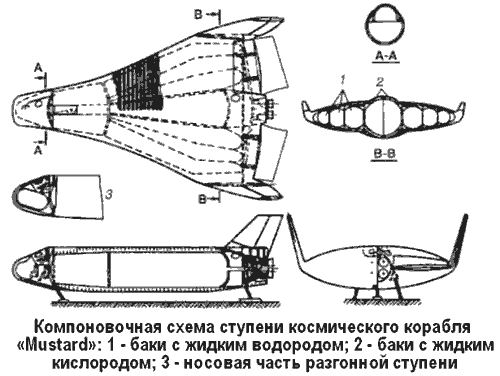
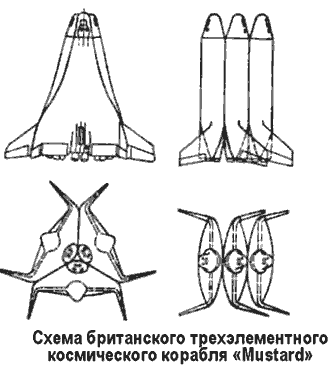
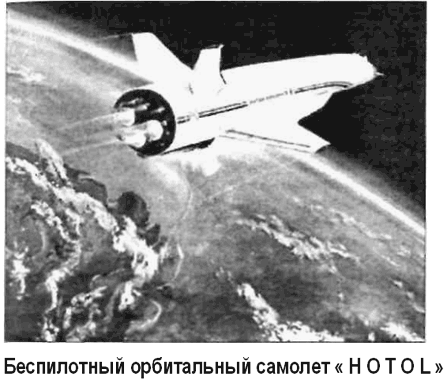
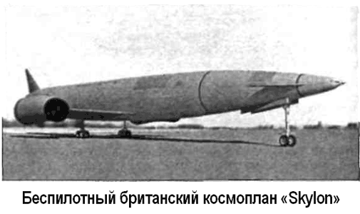

Британская космонавтика
В 1965 году британские конструкторы предложили проект трехэлементного воздушно-космического корабля «Мустард» («Mustard»), предназначенного для вывода полезного груза массой около 3 тонн на полярную орбиту высотой около 550 километров.
«Мустард» состоит из трех пилотируемых ступеней, аналогичных по конструкции и геометрическим размерам Масса каждой ступени около 137 тонн. Одна из ступеней выводится на околоземную орбиту, а две другие выполняют функции разгонных и являются носителями топлива.
Промежуточная орбита высотой 185 километров используется для запуска орбитальной ступени на расчетную орбиту, а также при сходе аппарата с орбиты перед входом в плотные слои атмосферы.
После выполнения своих функций ступени входят в атмосферу аналогично самолету и возвращаются в район старта.
Двигательная установка каждой ступени состоит из четырех ракетных двигателей, работающих на жидких водороде и кислороде. Кроме того, для возвращения в район старта на ступенях устанавливаются турбореактивные двигатели, также работающие на криогенном топливе. Центральный бак для жидкого кислорода выполнен из стали, а баки для жидкого водорода — из титана. Между баком жидкого водорода и нижней поверхностью конструкции ступени проложена изолирующая прокладка.
Проблема балансировки ступени в зависимости от вида полезного груза решается путем соответствующей загрузки двух грузовых отсеков, один из которых расположен внизу под отсеком экипажа, а другой — в зоне силового каркаса крепления двигателя между баком окислителя и двигателями.
Первый отсек предполагается использовать при полете на орбиту, а второй — при возвращении ступени с орбиты.
Двигательные установки всех трех ступеней при старте включаются одновременно. При этом возможны два варианта питания ступеней топливом. По первому варианту разгонные ступени питают топливом двигательную установку ступени, предназначенной для выхода на орбиту. По второму варианту двигательные установки всех трех ступеней работают на топливе из своих баков, выводят аппарат на орбиту высотой 55,5 километра при скорости 2 км/с.
Во время непродолжительного полета в баки ступени, предназначенной для выхода на орбиту, перекачивается топливо из разгонных ступеней, что приводит к некоторой потере скорости. Однако в конструктивном отношении вариант перекачки является более простым, чем подача топлива в орбитальную ступень с момента пуска. После разделения трех ступеней обе разгонные ступени входят в атмосферу и разворачиваются в направлении к месту пуска. При дозвуковой скорости полета запускается ТРД и ступень совершает полет к месту посадки. Дальность полета на крейсерском режиме достигает 600 километров.


На третьей ступени, после ее отделения, повторно включается двигательная установка, и ступень осуществляет полет на расчетную орбиту. Для маневрирования на орбите в баках имеется дополнительный запас топлива.
После выполнения задания (встречи и стыковки на орбите и осуществления необходимых погрузочно-разгрузочных операций) ступень тормозится до требуемой скорости. Затем происходит слив остатка топлива из специальных баков и ступень возвращается на Землю. Угол атаки при входе в атмосферу составляет приблизительно 40°.
В зарубежной печати сообщалось, что стоимость трехэлементного корабля «Мустард» сравнительно невысока, так как все три ступени аналогичны по конструкции.
Как полагают специалисты, до проведения первого капитального ремонта разгонные ступени можно использовать до 200 раз, а орбитальную ступень — до 25 раз.
Работы по программе «ХОТОЛ» («HOTOL») были начаты в 1982 году, когда английские фирмы «Бритиш аэроспейс» и «Роллс-Ройс» в инициативном порядке провели поисковые проектные исследования по одноступенчатым аппаратам с горизонтальными взлетом и посадкой и по маршевым двигателям для них. В результате был предложен проект многоразового беспилотного аппарата «ХОТОЛ», основными назначениями которого являются выведение спутников на низкую орбиту и материально-техническое обеспечение космической станции, включая доставку космонавтов в пилотируемой капсуле, размещаемой в грузовом отсеке.
Высокая экономичность системы «ХОТОЛ» достигается за счет исключения из его конструкции элементов и систем одноразового использования и сокращения затрат на предполетные операции. Значительную экономию эксплуатационных расходов дает практически полная автономия полетных операций, обеспечиваемая бортовыми радиоэлектронными системами.
Габариты беспилотного орбитального самолета «ХОТОЛ»: длина — 62 метра, размах крыла — 20 метров, диаметр фюзеляжа — 5,7 метра, взлетная масса — 250 тонн, посадочная масса — 34–47 тонн, масса полезного груза на орбите высотой 300 километров — 11 тонн.
Предполагается, что стартовать «ХОТОЛ» будет либо с разгонной аэродромной тележки, либо с самолета-носителя.
Длина взлетной полосы — от 2,3 до 4 километров. Эксплуата ционный ресурс — 120 полетов.
Особый интерес в конструкции орбитального самолета «ХОТОЛ» представляет маршевая кислородно-водородная двигательная установка «HOTOL RB454», способная функционировать последовательно в режимах воздушно-реактивного и жидкостного двигателей. С момента старта и до высоты 28 километров (скорость — 5 Махов) в течение 9 минут двигатель работает в режиме воздушного с использованием атмосферного воздуха, сильно охлажденного бортовыми средствами, а затем, до высоты 90 километров, — в режиме жидкостного двигателя. Довыведение полезного груза на расчетную орбиту осуществляется с помощью кислородно-водородной двигательной установки орбитального маневрирования.
Главным новым элементом маршевого двигателя является крупногабаритный теплообменник, примыкающий к задней части воздухозаборника. В теплообменнике происходит глубокое охлаждение поступающего в двигатель воздуха за счет запаса холода в жидком водороде, что позволяет продлить работу двигателя в режиме воздушно-реактивного до скорости 5 Махов. Обычные турбореактивные двигатели имеют предельное значение скорости — 3 Маха. Повышение плотности воздушного потока позволяет уменьшить габариты турбокомпрессора. Нагретый водород используется для привода турбины. Кроме того, увеличивается теплосодержание водорода как горючего, компрессор повышает давление воздуха приблизительно до 140 атмосфер. Из компрессора воздух поступает в камеру сгорания, где взаимодействует с водородом, отработанным на турбине и подаваемым частично из бака Фирма «Бритиш аэроспейс» предложила британскому правительству программу разработки базовой технологии летательного аппарата «ХОТОЛ», разделенную на два трехгодичных цикла. В соответствии с ней изготовление должно было быть начато в 1994 году, а первый полет был запланирован на 2000 год.
Однако в июле 1988 года правительство отказалось от дальнейшего финансирования проекта «ХОТОЛ», поскольку затраты (порядка 6 миллиардов фунтов стерлингов), необходимые для его доведения до стадии производства, слишком велики для одной Англии.
Обращения фирм «Бритиш аэроспейс» и «Роллс-Ройс» к Европейскому Космическому агентству с предложением, официально признать и профинансировать программу «ХОТОЛ» закончились безрезультатно. Попытки фирм-разработчиков привлечь частный капитал британских и зарубежных аэро-космических фирм для спасения программы также не увенчались успехом.
В сентябре 1990 года фирма «Бритиш аэроспейс» и Министерство авиационной промышленности СССР в ходе авиационно-космической выставки «Фарнборо-90» подписали соглашение о проведении совместных исследований по оценке технических возможностей и экономических аспектов использования находящегося в эксплуатации советского тяжелого самолета-носителя Ан-225 (Мрия) для запуска воздушно-космического самолета «ХОТОЛ».
Воздушный старт позволяет применить в составе воздушно-космического самолета вместо ранее предполагаемой комбинированной маршевой двигательной установки связку из четырех кислородно-водородных двигателей, поставляемых Советским Союзом. Кроме того, воздушный старт заменяет пуск со стартовой разгонной тележки и обеспечивает воздушно-космический самолет некоторой начальной скоростью на высоте, где плотность атмосферы меньше.
Основные характеристики «ХОТОЛ» с воздушным стартом: длина — 36,15 метра, размах крыла — 21,6 метра, полная масса космического самолета — 250 тонн, масса полезного груза на высоте 275 километров — 8 тонн.
Полет «ХОТОЛ» на самолете-носителе «Ан-225» заканчивается разделением на высоте 10 километров при скорости 0,8 Маха, после чего следует горизонтальный разгон до 5 Махов.
С этого момента начинается маневр выхода «на горку» с перегрузкой 1,4 g до высоты около 20 километров и скорости в 3 Маха. Далее происходит набор высоты па полубаллистической траектории с использованием тяги двигателей и подъемной силы крыла. Подъем осуществляется с постоянным углом наклона траектории к горизонту до высоты около 80 километров и скорости до 20 Махов. Тяга двигателей дросселируется, чтобы уровень перегрузки не превышал 3 g.
Затем угол подъема уменьшается, и на высоте почти 90 километров при скорости 27,2 Маха космический самолет выходит на эллиптическую орбиту с перигеем 70 километров и апогеем 300 километров.

Управление полетом «ХОТОЛ» на участке выведения осуществляется отклонением маршевым двигателей рулевыми двигателями на концах крыла, а также с помощью выдвижного переднего горизонтального оперения, стабилизатора и элеронов при управлении по каналу крена.
При входе в атмосферу управление полетом, при убранном оперении, обеспечивается двигателями на концах крыла.
При движении в плотных слоях атмосферы управление полетом осуществляется с помощью выдвижного переднего стабилизатора, элеронов и подфюзеляжного щитка.

После того как фирме «Бритиш аэроспейс» было отказано в финансировании проекта «ХОТОЛ», часть специалистов, работавших над ним, учредила новую фирму «Риэкшен Энжинес» («Reaction Engines Ltd.»), основным направлением деятельности которой является создание воздушно-космического самолета «Скайлон» («Skylon»). Конструкторам «Риэкшн Энджинес» не позволили использовать в своей работе задел по воздушно-реактивным двигателям «HOTOL RB454», поскольку они остаются секретными, поэтому им пришлось разработать новый двигатель «SABRE» («Synergic Air Breathing Engine»), работающий как воздушно-реактивный на скоростях до 5,5 Маха, а затем переключающийся в режим ЖРД.
Согласно проектным расчетам, «Скайлон», имея грузовой отсек 12,3 на 4,6 метра, может доставлять на экваториальную орбиту 12 тонн полезного груза или 9,5 тонны — к Международной космической станции.
В 1997 году проект «Скайлон» изучался Европейским Космическим агентством, как один из возможных вариантов перспективного орбитального транспортного средства Кроме того, обсуждалась возможность участия проекта «Сайлон» в конкурсе «Икс-Прайс» на создание туристического космоплана.
Общая стоимость реализации проекта «Скайлон» оценивается в 10 миллиардов долларов.